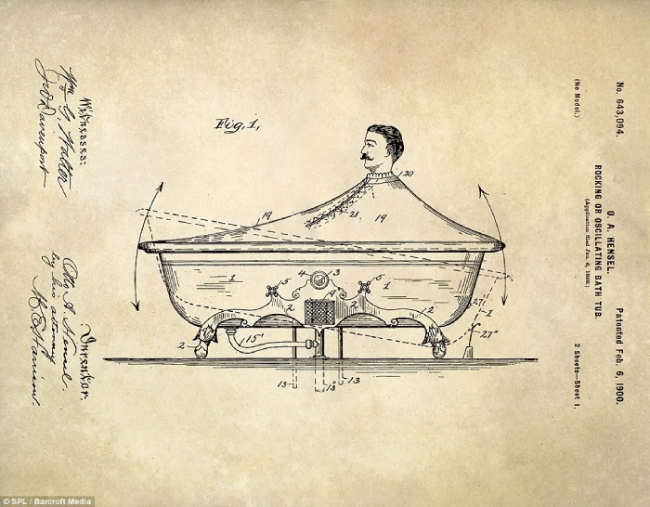
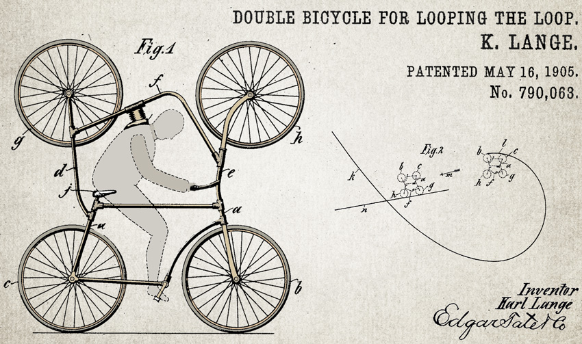
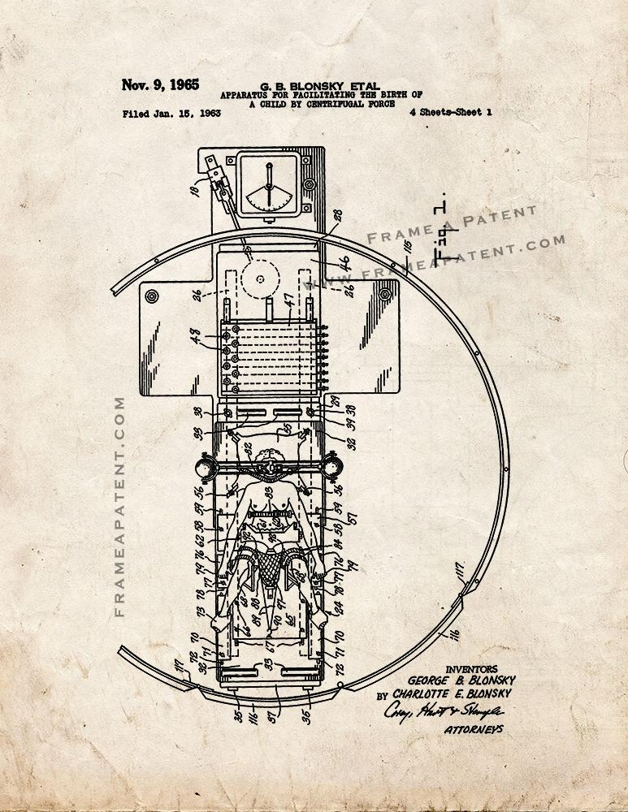

Vi hittade väldit mycket catguld med 1900-talet, varför? Jag vet inte, historiker är vi inte.

"Gungande eller svängande badkar" - Februari 1900
För den som vill ha en gungstol och ett badkar samtidigt. Men se till att först sätta på förklädet, annars så spiller man vatten över hela golvet.

"Dubbelcykel för looping" - Maj 1906
Trots att det var bara gjord för cirkusartister kan man fortfarande nå nytta av det här, så länge det finns en loop mitt i cykelbanan.
Patent fårn 1995. Har du någonsin brågat med dina kompisar om vem som har bäst balence? Nu kan du det med den har bär bara mag bräden, mer plats för saker medan du vissar din prefeckta balence och aexle struga till dina pålare. Se till att du inte råkar bya på dig när du har någtin på. Gör inte dinna axlar heller!

Har du någonsin tänkt att processen av att ge nyt liv (födda barn) tar för lång tid? Varför inte opetmera straten! Det har tycke Charllte och Groeg blankly.